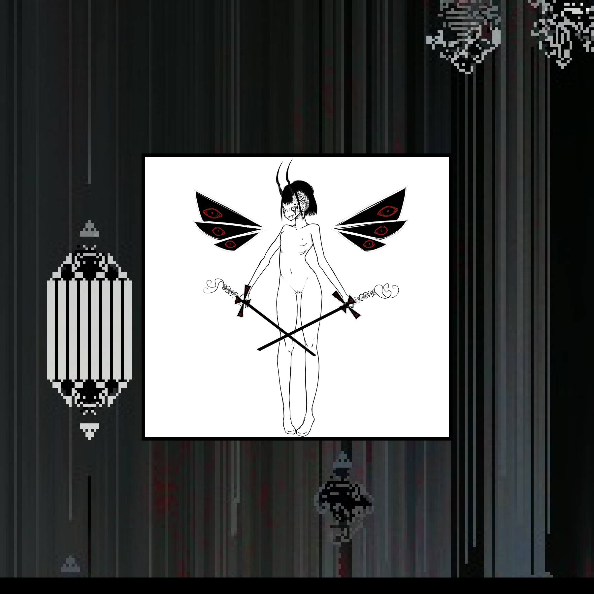
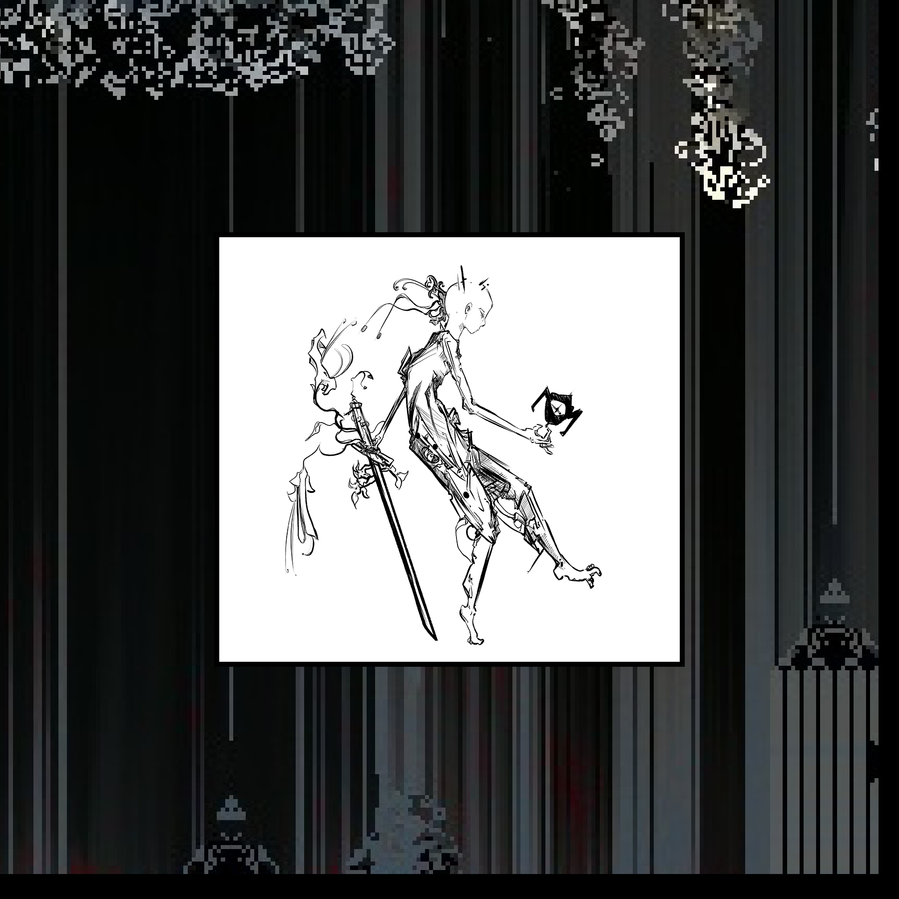
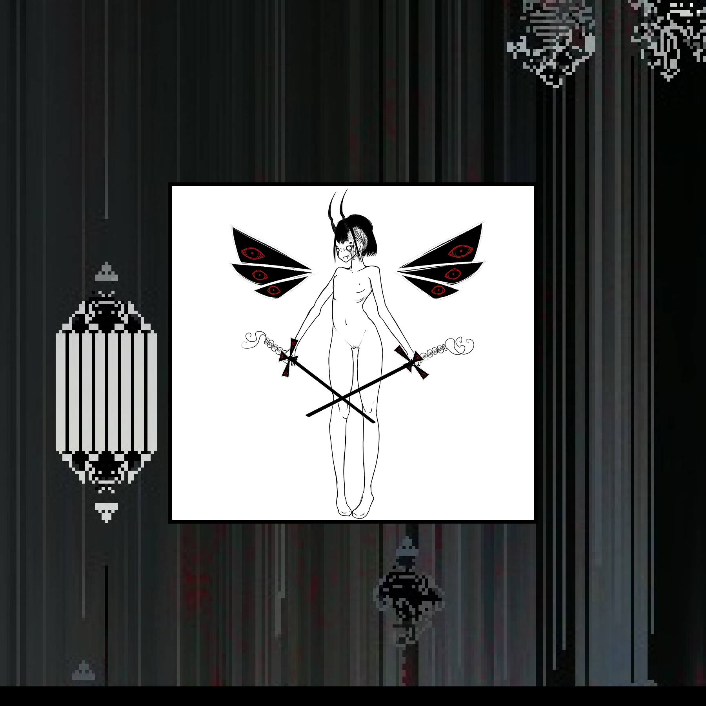
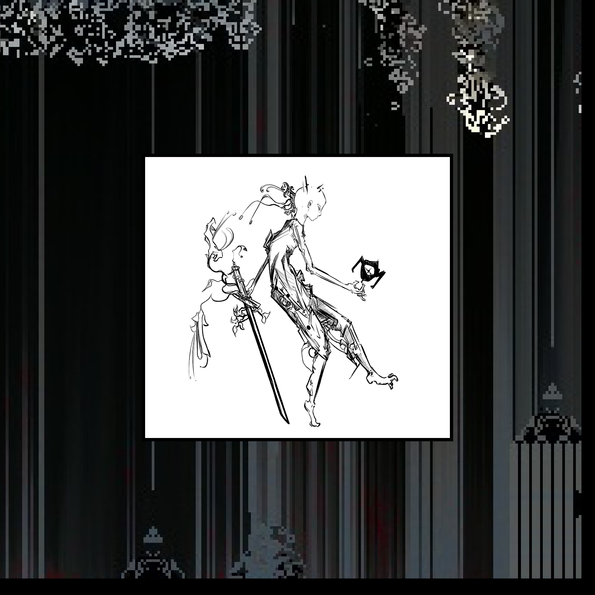
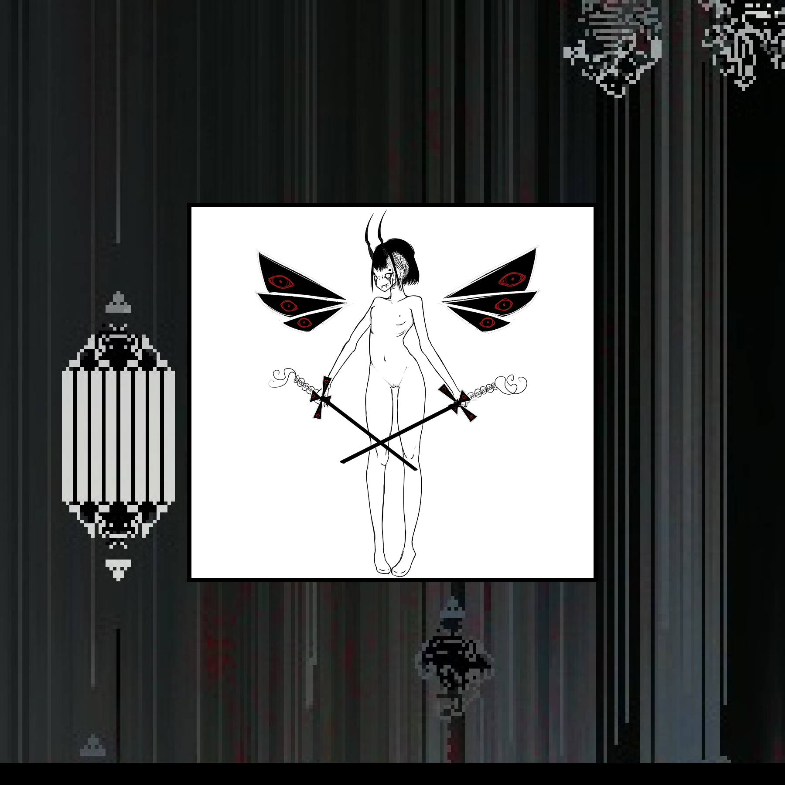
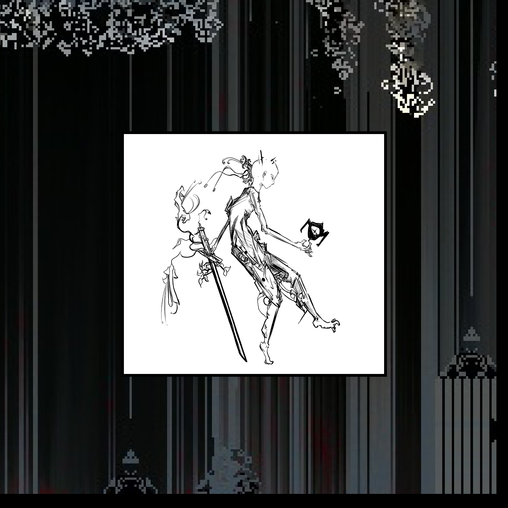

Cryptoggraphic poem


┌──────┐
│∙INFO∙│
├──────┴─────────────────────────────┐
│ │
╞▌LUX MINIMA │
│ │
│:Lux Minima is the project of an │
│ independent creative group. │
│ │
│It consist of creating around a │
│scenario a battery of history under │
│different mediums. │
│ │
│Everything will be displayed in a │
│single medium, retranscribing the │
│collective work and artistic │
│technique on a web format mixing │
│several discipline to make the most │
│out of everyone creation. │
│ │
│Few of the creation will be │
│accessible to the public, the work │
│of the member will be private before│
│the final stage of the project. │
│ │
│There is a public area with shop │
│and social for supporting the │
│members. │
│ │
╞▌SHELLCODE OS │
│ │
│:shellcodeOS is the engine of Lux │
│ Minima. │
│ │
│An online ecosystem dedicated to │
│digital creation │
│ │
│Available anywhere and and │
│compatible with Win,Mac,Linux with │
│all the web technology (such as │
│Javascript, webGL, HTML5, and more).│
│ │
│Made for pc with a Command Interface│
│and a Graphical Interface, │
│compatible for mobile. │
│ │
│ │
└────────────────────────────────────┘